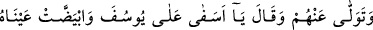
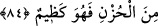

annesinin gözleri önünde böğürte böğürte kesmesidir.
Yine denilir ki Yâkub (a.s.) çocuklu bir câriye satın almış, fakat çocuğu sattığı için
câriyenin ağlamaktan gözleri kör olmuştu.
Bir diğer rivâyete göre ise Yâkub (a.s.)’a şöyle vahyetti: Bütün bu dertleri başınıza
şunun için getirdim: Bir koyun kesmiştiniz, bir miskin kapınıza dikilmişti de ona bir
parça et bile vermemiştiniz.
Mihnet verme şeklindeki belâya gelince Eyyûb (a.s.)’ın başına gelenler, buna örnektir.
Allah Teâlâ buyurur ki: “Gerçekten biz Eyyûb’u sabırlı bulduk. O ne iyi bir kuldu!
Daima Allah’a yönelirdi!” (Sâd, 38/44)
Kerâmet şeklindeki belâya gelince, buna örnek Yahyâ b. Zekeriyyâ’nın başına
gelenlerdir. Yahyâ (a.s.) hiç hata işlememiş, işlemeye de tevessül etmemiş olduğu halde
koyun gibi boğazlanmış ve başı İsrâiloğulları’nın zorbalarından birine hediye edilmişti.
Bütün bu belâ çeşitlerinin karşılığında sabredip ızdırabını belli etmeyenlere büyük
ecir ve sevaplar verilecektir.
Bir kimse, virdini yapmak üzere gece kalktı. Kendisini soğuk çarptı ve soğuğun
şiddetinden dolayı ağladı. O sırada hafif bir uykuya daldı. Uykusunda birisi kendisine:
“Herkesi uyuturken seni kaldırmamızın karşılığı bize böyle ağlamak mı?!” deyince
hemen uyanıp mağfiret diledi.
Ebü’l-Kasım Kuşeyrî şöyle der: “Üstaz Ebû Ali Dekkak’ın hastalığının iyice arttığı
âhir ömründe şöyle dediğini işittim: “Hüküm vakitlerinde tevhîdi korumak ilâhî te’yide
mazhar olduğunuzu gösteren emârelerdendir.”
Sonra da içinde bulunduğu hâli ve böyle durumlarda kendisinin nasıl hareket ettiğini
açıklarcasına şöyle dedi: “Bu, hükümlerin uygulandığı zamanlarda kudret makaslarıyla
lime lime doğranmanız, fakat bu sırada ölü gibi sessiz ve sâkin durabilmeniz demektir.”
Hâfız şöyle der:
Eğer dostun lütfu âşıkların cehenneminde olmamamı beğenirse
Aç gözlüyüm eğer kevser çeşmesine nazar edersem